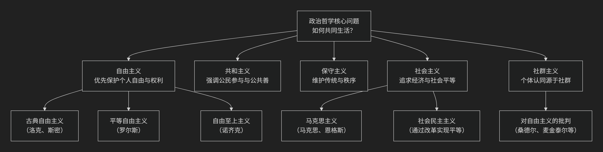

政治
政治哲学（Political Philosophy）是关于权力、正义、自由、国家与合法性的哲学探讨，其核心内容包括政治价值、政治制度与政治理想。它与法律哲学密切相关，二者共同探讨规范秩序的正当性与合理性，但政治哲学更关注权力的分配与公共生活的道德基础。
一、什么是政治哲学？
政治哲学是哲学的一个分支，研究政治现象背后的规范性问题。它关心的问题包括：
什么是正义、自由、权利、平等？
政府的合法性从何而来？
公民应承担哪些义务？
何时可以合法地反抗或推翻政府？
国家应采取何种形式？保护哪些自由？
它不仅是对政治制度的哲学反思，也关涉人类如何共同生活的根本问题。
二、政治哲学的主要内容
政治哲学的研究内容可分为三大核心领域：
政治价值：如自由、平等、正义、权利等，是政治哲学的规范基础。
政治制度：如民主、君主制、共和制、法治等，探讨制度的正当性与运作逻辑。
政治理想：如乌托邦、共同体、世界政府等，关涉人类政治生活的愿景与终极目标。
三、政治哲学的主要流派
流派 |
核心观点 |
代表人物 |
|---|---|---|
古典政治哲学 |
追求理想城邦与德性政治 |
|
自由主义 |
强调个人权利与有限政府 |
|
保守主义 |
强调传统、秩序与渐进改革 |
|
关注阶级斗争与历史唯物主义 |
||
强调共同体与文化认同 |
||
反对国家权力，主张自发秩序 |
||
批判理论 |
揭示权力结构与意识形态 |
|
女性主义政治哲学 |
关注性别不平等与权力关系 |
四、政治哲学与法律哲学的关系
政治哲学与法律哲学密不可分：
政治哲学关注权力的正当性，法律哲学关注法律的合理性与规范性。
二者都探讨 正义、权利、义务、合法性 等核心概念。
政治哲学提供法律制度的价值基础，法律哲学则检验法律规则的逻辑与道德一致性。
在实践哲学的谱系中，政治哲学与法律哲学并列，前者偏向宏观制度设计，后者偏向微观规范分析。
这是一个非常核心的哲学问题。我将为您系统性地梳理政治哲学的定义、主要内容及其主要流派。
一、什么是政治哲学？
政治哲学**是哲学的一个分支，它运用哲学的方法，对政治生活进行**根本的、规范性的反思。它不满足于描述政治“是”什么样（这是政治科学的任务），而是追问政治“应当”是什么样。
其核心是探究政治权力的**合法性基础**、社会制度的**正义原则**以及人类共同生活的**理想模式**。简单来说，它研究的是**“我们应当如何共同生活？”**这一根本问题。
—
二、政治哲学的主要内容（核心问题）
政治哲学围绕一系列相互关联的根本问题展开，其主要内容可以概括为以下五个核心领域：
核心领域 |
核心问题 |
关键概念 |
|---|---|---|
政治权威与合法性 |
为什么我们要服从国家？政府的权力从何而来？ |
社会契约、同意、正当性 |
正义与分配 |
什么是正义的社会？社会财富如何公平分配？ |
社会正义、公平、平等 |
自由与权利 |
个人自由的边界在哪里？ |
消极自由、积极自由、个人权利 |
平等与民主 |
人应该在哪些方面平等？ |
形式平等、实质平等、民主理论 |
国家与共同体 |
政治共同体的目的是什么？ |
共同善、公民美德、公共利益 |
—
三、政治哲学的主要流派
对于上述核心问题，不同的思想家给出了系统性的、但往往相互竞争的回答，从而形成了主要的思想流派。下图清晰地展示了这些流派的核心理念与演变关系：

以下是各流派的详细说明：
1. 自由主义 * 核心主张：个人自由和权利**是最高政治价值。国家的首要任务是保护个人的生命、自由和财产，其权力必须受到限制（如宪法、分权）。 * **关键区分：
古典自由主义：强调“守夜人”式的最小国家，侧重**消极自由**（不受干涉的自由）。
平等自由主义**（如罗尔斯）：承认国家需进行适当干预，以确保公平的起点和背景正义，追求**实质平等。
代表人物：约翰·洛克、约翰·斯图亚特·密尔、以赛亚·伯林、约翰·罗尔斯。
2. 共和主义 * 核心主张：自由不仅是不受干涉，更在于**免于支配**。真正的自由是通过**公民积极参与政治自治**来实现的，强调公民美德和公共善。 * 代表人物：亚里士多德（古典）、马基雅维利、卢梭、当代的昆廷·斯金纳。
3. 保守主义 * 核心主张：对激进的理性建构和社会变革持怀疑态度。强调**传统、秩序、权威和渐进式改革**的价值，认为社会制度是历史智慧的沉淀。 * 代表人物：埃德蒙·柏克、迈克尔·奥克肖特。
4. 社会主义/马克思主义 * 核心主张：批判资本主义制度是**剥削和不平等的根源**。主张通过改变经济基础（如生产资料公有制）来实现真正的自由与平等，强调**社会平等**和**集体行动**。 * 关键区分：
**革命社会主义**（马克思主义）：通过革命推翻资本主义。
社会民主主义：通过议会民主和福利国家政策在资本主义框架内进行改革。
代表人物：卡尔·马克思、弗里德里希·恩格斯。
5. 社群主义 * 核心主张：批判自由主义的“原子化”个人观。认为**个人的身份、价值和目标都是由其所在的社群构成的**。主张“共同善”优先于个人权利。 * 代表人物：阿拉斯代尔·麦金泰尔、迈克尔·桑德尔、查尔斯·泰勒。
6. 其他重要流派 * 无政府主义：否定一切强制性国家权力的合法性，相信人类可基于自愿合作实现社会和谐。 * 女性主义政治哲学：批判传统政治哲学中的性别偏见，从性别视角重新审视权力、正义和公私领域划分。 * 环境主义政治哲学：将道德关怀扩展到非人类物种和生态系统，强调可持续发展与代际正义。
总结
总而言之，政治哲学是对公共生活之根基的持续拷问。它为我们**评估现实政治、构想更美好社会**提供了不可或缺的概念工具和理想蓝图。不同流派之间的辩论，正是人类对“良好生活”的永恒探索的体现。